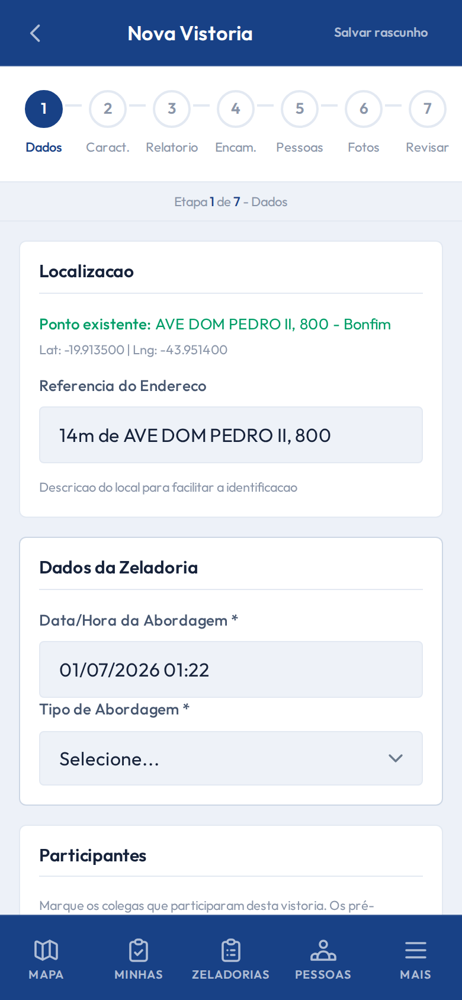

Campo
Conectividade instável
Rascunho e modo offline
PWA com sincronização automática para uso em campo.
Rascunho
- Salvamento parcial automático
- Retomada ao reabrir
- Proteção contra perda
Fotos offline
- Fila local de imagens
- Sincronização ao reconectar
- Compactação WebP no dispositivo
/vistorias/create
